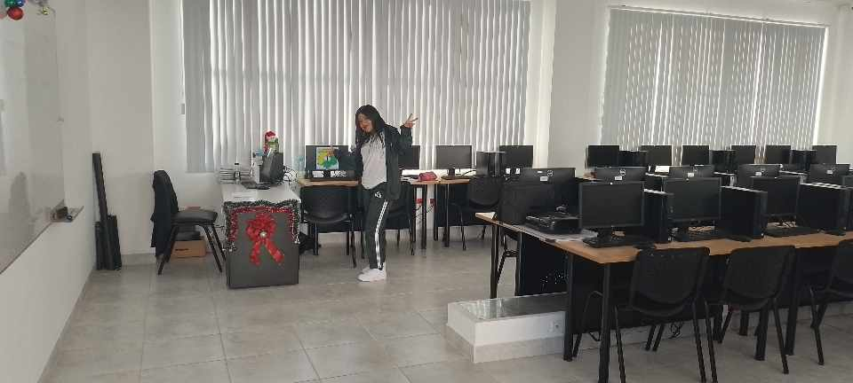

<html>
<head>
    <!DOCTYPE html>
<html>
<head>
<style>
body {
    background-color: #93B874;
}
h1 {
    background-color: #00b33c;
}
p {
    background-color: #FFFFFF);
}
</style>
</head>
<body>


</body>
</html>
<title>TRABAJO EN CLASE</title>
    <style > 
        body [
        background-color:"green"
        ]
    </style>
<link rel="stylesheet" href="aspecto.css">
    
<body>
    
<center><h2> UNIDAD EDUCATIVA MALCHINGUI </h2></center>
   <center><h3> Nombre: Jessica Caza </h3></center> 
    <center><h3> Curso: Tercero Técnico </h3></center> 
  <hr color=black> 
<h1> MI EXPERIENCIA EN LAS PASANTIAS </h1>
    <H3> Empresa: Unidad Educativa "Malchinguí </H3>
    
<p> SALIR A LAS PRACTICAS PREPORFESIONALES FUE ALGO QUE NUNCA EN LA VIDA ME HABIA SUSEDIDO , DONDE RECALCO QUE YO Y MI AMIGA IVAMOS HACER EN LA EMPRESA DE "FLORSANI" PERO DESIDIMOS APOYAR Y APRENDER UN POCO MAS DENTRO DE LA INSTITUCION MISMA , CON LA QUE PASABAMOS SIEMPRE FUE CON LA LIC_VERONICA QUIÑONEZ DESDE LAS 7:000 HASTA LAS 13:00 DONDE NOSOTROS SALIAMOS AL ALMUERZO. TAMBIEN FUE DEMACIADO VERGONZOSO YA QUE TUVIMOS QUE COMPARTIR EN EL MISMO LABORATORIO CON NUESTROS COMPAÑEROS DE PRIMERO Y SEGUNDO TECNICO . 
    TUVE DEMACIADAS EXPERIENCIAS DENTRO DE TODO EL MES QUE ESTUVIMOS EN LAS PRACTICAS YA QUE PUDIMOS DESARROLLAR NUEVOS APRENDIZAJES Y DE IGUAL MANERA ENSEÑAR LO QUE YA TENIA CONOCIMIENTO .
    ALGO INERSPERADO QUE SUCEDIO FUE QUE TUVE QUE REMPLAZAR LA PRESENCIA DE LA LICENCIADA VERONICA QUIÑONE POR ALGUNAS HORAS DONDE ME DI CUENTA EL DIA A DIA DE CADA DOCENTE , DONDE ENTENDI QUE SI CANSA EL PASAR LA MAYORIA DEL DIA JUNTO A TODOS NUESTROS COMPAÑEROS , SOPORTAR BULLAS TAMBIEN EL TENER QUE SOPORTAR A ESTUDIANTES IRESPETUOSOS DONDE TAMBIEN EL DESTACAR EL BUEN DESARROLLO DE APRENDIZAJE DE LOS ALGUNOS ESTUDIANTES. 
    ALGO CHISTOSO QUE NOS SUCEDIA QERA QUE CASI LA MAYORIA DEL TIEMPO DE LAS PRIMERAS SEMANAS PASABAMOS AFUERA YA QUE TENIAMOS QUE CONTABILIZAR LOS MUEBLES , Y CASI LA MAYORIA DE LICENCIADOS NOS DECIA "SOLO AFUERA PASAN" :D
    PUDE APRENDER ALGUNAS COSAS SOBRE EXCEL , EL INGRESO DE DATOS DENTRO DE UN INVENTARIO , EL MEJOR MOVIEMIENTO DE LOS DEDFOS DENTRO DEL TECLADO DONDE AHORA YA DOMINO UNPOCO MEJOR , TAMBIEN APRENDI ALGUNAS COMBINACIONES DE TECLADO QUE NOS FACILITAN PARA REALIZAR LAS COSAS UN POCO MAS RAPIDO . 
    TAMBIEN RECORRI TODO EL COLEGIO , CONOCI LAS OFICINAS , QUE ES LO QUE CADA UNO DE ELLAS CONTENIA .</p>
    <p> TAMBIEN DEBO RECALCAR QUE LA MEJOR EXPERIENCIA FUE COMPARTIR DEMACIADAS COSAS JUNTO A MI AMIGA , DONDE JUNTAS RECORRIMOS TODO EL COLEGIO BUSCANDO CADA BIEN INMUEBLE QUE NECESITABAMOS CONTABILIZAR , DONDE DENTRO DE CADA RISA , CADA ESTRES , CADA ENOJO REFORZXAMOS MAS LA AMISTAD , NUNCA PODIAMOS ESTAR SIN REIRNOS YA QUE SOMOS MUY GRACIOSAS.</p>
    
    <P> PERSAONALMENTE PARA MI SE ME HIZO MUY CORTO EL MES DE LAS PASANTIAS YA QUE CUANDO TUVIMOS QUE INGRESAR FUE UN POCO RARO APESAR DE QUE  ESTUVIMOS EN EL COLEGIO MISMO REALIZANDO LAS PASANTIAS </P>
    </body> </head> </html>